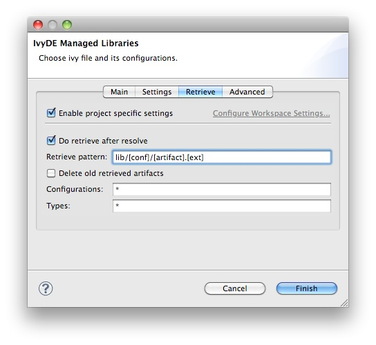

It is possible to make IvyDE copy resolved dependencies into your project: a retrieve of the dependencies can be triggered on each resolve of the classpath container. To enable this behavior, enter the classpath container configuration panel, and select the second tab, "Retrieve". <center></center> The <b>Retrieve pattern</b> specifies the location where the dependencies should be copied relative to the containing project. The <b>Delete old retrieved artifacts</b> check box will cause IvyDE to clean the output directory before each retrieve. Note that any other artifacts other than those previously retrieved by IvyDE in this container will be deleted as well if this option is selected. Finally, you can select which <b>Configurations</b> should be resolved and you can select which <b>Types</b> of artifacts should actually be retrieved. In both fields, <i>*</i> means <i>all</i>.